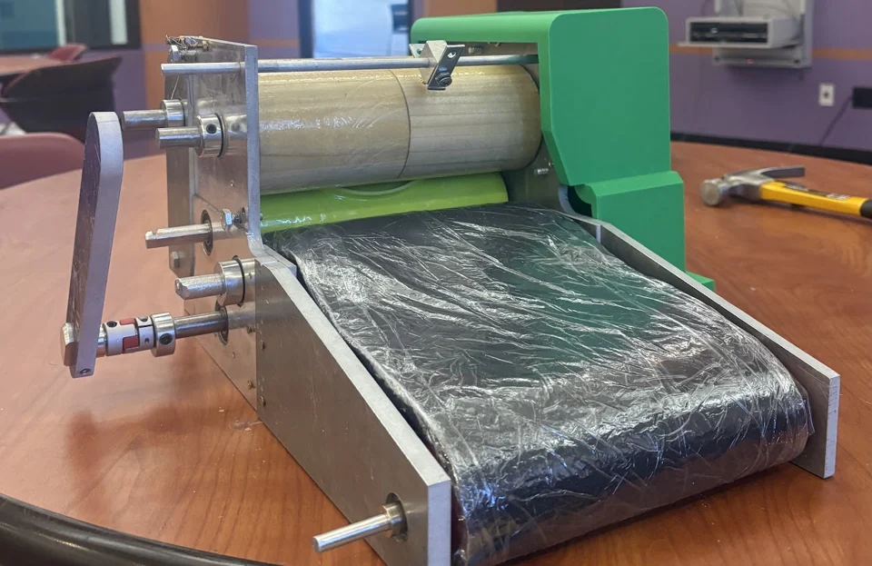

The idea
Our four-person team built a bench-scale, motor-driven machine to turn masa into tortillas. The challenge was to coordinate the rollers, cutter, and conveyor so the dough moved through the machine consistently, while making the surfaces in contact with the masa food-safe.
My contribution
I designed the gear train and calculated all of the gear ratios and motion transfers needed to coordinate the rollers, cutter, and conveyor. I created the full CAD model, the exploded view, and the design calculations.
I also machined the gears, including facing and drilling the holes. A major part of my work was getting the physical gears to fit and mesh properly: the assembled parts behaved differently from the CAD model, so I worked through the fit and alignment issues and troubleshot the gear train until the gears moved together.
The result
The team’s machine combined resin-coated wooden rollers, a 3D-printed cutter, and a synchronized conveyor to turn masa into tortillas. We reduced the tortilla diameter from 6 inches to 4 inches to address distorted, oblong output, and used a 1/8-inch roller gap. Getting a consistent tortilla took both gear-train calculations and hands-on iteration with the dough.
We cut the planned music subsystem because of time and budget constraints.


Following the dough
The rollers flatten the masa before the cutter and conveyor handle the next steps. These components needed to work together at compatible speeds.